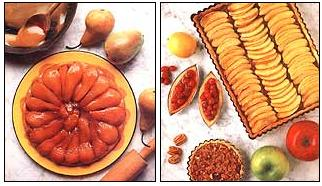

Celebrate the season with home-baked harvest pies.
AH, SEPTEMBER SONGS: THE RHYTHMIC whisper of dry leaves, the staccato crackle of the year's first fires, the basso rumble of school buses, the reedy whine of family and friends-"Are you ever going to bake us another pie?"
Autumn seems to orchestrate a return to the kitchen, to lure us back to the stove. With cooler days and nights, heating up the oven becomes a pleasure. Gone are the hectic days of late-summer canning and freezing, when we swore that if we ever got the garden cleaned out we'd never set foot in a kitchen again; cooking for pleasure becomes conceivable once more. An abundant harvest bids us put it to use, and its beauty-the brilliant colors, elegant shapes and rich s cents of apples, pears, pumpkins, grapes-inspires us to create something splendid.
And all around us, people trumpet their encouragement. They flatter. ("The restaurant's apple pie was adequate, of course, but compared to yours...") They wheedle. ("Just one more little pumpkin pie wouldn't be much work.") They bribe. ("OK, what if I did all the dishes for three full days?") And, ultimately, they plead. ("Ple-ease!")
The reason for this cacophony is that sooner or later all bakers tire of the same tune: After preparing the third apple pie of the season, the fourth just isn't much of a challenge. How do we harmonize the mundane cravings of our nearest and dearest with our longing to hum new melodies?
Tarts: Traditional enough to substitute for old standbys, jazzy enough to keep the cook interested, they're pretty enough to serve as fitting anthems to a beautiful season.
ESSENTIALLY, A TART IS A SINGLE crust pie baked in a tart pan, a two-part contraption consisting of a fluted metal ring that forms the sides, and a flat disk that forms a removable bottom. The bottom fits within the ring and rests on a narrow lip attached to its lower edge. After the tart has cooked and cooled, the ring is removed by placing the pan on a surface smaller than itself (e.g., a Mason jar) and guiding the ring down to the counter, leaving an attractive, fluted, freestanding crust. Contrary to your darkest expectations, the ring does in fact come away easily; the crust shrinks enough during baking to prevent any sticking or tearing. (Allegedly, the tart can also be removed from the bottom disk onto a separate serving platter, using a rimless baking sheet as a giant spatula. I've never summoned the courage to attempt this maneuver; if you do, let me know how it turns out.)
Tart pans are available for under $5 from kitchen specialty shops, and range from three- or four-inch individual molds to the standard eight-, nine-, 10- and 11-inch pans.
Embarrassing admission no. 1: It is astonishingly difficult to remember that if you lift a tart pan from the bottom (or with one hand), it will obligingly come apart. There is no wrong time to remember this law of physics, but the very best moment is when removing a hot pie from the oven. Always use both hands, placed on opposite sides of the ring.
Pastry
As every beginning baker knows, a good pie crust has two essential characteristics: It's tender, and it's flaky. A few simple techniques will produce those results.
The bane of good pastry is gluten, a stringlike protein found in most flours. While essential to bread baking (its long, elastic threads form a framework that supports the expanding air bubbles in the rising loaf), gluten produces a dense, tough pie crust if allowed to develop. So the two things that activate gluten-warmth and handling-are good for bread and bad for pies. Crusts turn out better if all ingredients are cold (especially the fat), if the working surface is cool, if the dough is refrigerated before it's rolled and if it spends as little time in your warm hands as possible. The same precautions help produce flakiness, which results when small particles of fat and flour remain discrete; handling and heat tend to melt the fat, thus dispersing it uniformly through the flour and harming the crust. (This is why oil is not a satisfactory fat for pie crusts.)
For dessert tarts, the traditional (and best) crust is a short dough sweetened with sugar and enriched with an egg yolk. The bad news about this crust (which tastes something like shortbread and is almost good enough to eat by itself is that it tears fairly easily when you're rolling it out, because it's so rich. The good news is that it's child's play to patch.
Short, Sweet Pastry
1 1/4 cups all purpose flour 2 tablespoons sugar 1/2 cup (1 stick) cold unsalted butter 2 tablespoons ice water 1 egg yolk, lightly beaten
Combine dry ingredients in large bowl. With two sharp knives or a pastry blender, cut in butter until mixture resembles coarse meal. Mix egg yolk with ice water, add to bowl, and stir quickly with fork, just until moisture is absorbed. If dough will not hold together, add more ice water, a teaspoon at a time, until you can form dough into a ball. Gather up dough, flatten into a disk, wrap in foil or plastic wrap, and refrigerate 30 minutes.
On a lightly floured board or counter top, roll pastry to a thickness of 1/8 inch. Roll it up loosely over the rolling pin, then unroll it onto the tart pan. Lifting the edges of the crust, fit it into the pan, tucking it into the bottom creases and pressing it into the flutes along the sides. (Don't stretch the dough, or it will simply shrink back when baked.) Trim pastry by rolling the rolling pin across the top of the pan. Chill until ready to use (your final chance to relax the gluten). Makes enough pastry for one eight- to 11-inch tart.
Embarrassing admission no. 2: In testing recipes for this article, I made the crust described above for the first few tarts; it drew compliments. As deadline approached and shortcuts beckoned, I bought a Pillsbury All Ready Pie Crust, which I considered too salty and not sweet enough for a tart crust. (Ignore the crust, I was prepared to say, just taste the filling.) It drew compliments. On the spot, I concluded that if the people I cook for have no particular preference between a crust that takes an hour to make and one that requires 30 seconds, I may well have rolled my last piece of dough. If you also cook for nonpurists, you might want to investigate this unfold-and-bake product.
Blind baking. Caution: Don't start blind baking your pie crusts-partially pre-baking an empty shell-unless you are prepared to continue for the rest of your cooking career. The crust will be so much firmer and crisper that you will never be content with a soggy bottom again. Particularly useful with liquid or custard fillings, blind baking is, fortunately, simple and fast.
Preheat oven to 425°F. Place pastry in tart pan, line with foil-shiny side down, so as not to reflect the heat-and fill with dry beans, pushing them into the bottom edges. (The beans can be stored and used repeatedly.) Bake about 15 minutes, until bottom is set and sides are lightly browned. If the filling is particularly runny, add a second step: Brush the bottom with a beaten egg yolk, and bake another two minutes, until glaze is dry. Your crust is now ready to be filled and baked.
Apple Tart
1 8- or 9-inch tart shell, partially baked 2 pounds cooking apples 1/4 cup butter 1/2 cup apricot jam, divided 1/3 cup plus 2 tablespoons sugar, divided Grated rind of 1 lemon 1/4 cup apple brandy 1 pound eating apples 2 tablespoons lemon juice, divided
Peel, core, and coarsely chop cooking apples. (If you have a food processor, leave apples unpeeled; when cooked and processed, the puree will have an attractive pink color and a greater depth of flavor. Without a processor, separating out the cooked peel is difficult, although it can be done.) Melt butter in medium saucepan, add apples, cover, and cook until soft and mushy. Mash apples with vegetable masher, process, or rub through sieve until smooth. Add 1/4 cup of the apricot jam, 1/3 cup of the sugar, lemon rind and apple brandy. Cook over high heat, stirring constantly, until excess liquid has evaporated and applesauce is thick. Set aside to cool. Meanwhile, peel, core, and thinly slice eating apples. Toss with 1 tablespoon of the lemon juice and 2 tablespoons remaining sugar. Spoon applesauce into partially baked tart shell, and arrange apple slices in an overlapping circle around the edge of the tart, then arrange second and third circles inside that. Bake at 350°F 25-30 minutes. Cool 10 minutes. Combine remaining 1/4 cup apricot jam with remaining 1 tablespoon lemon juice, stir over medium heat 2-3 minutes, strain, and, while still warm, paint apple slices with glaze. Serve warm or chilled.
Caramelized Pear Tart
3/4 cup sugar 3 tablespoons water 4 tablespoons (1/2 stick) unsalted butter, cut in pieces 6-8 firm pears Pastry for single crust, unbaked*
Place sugar and water in 8- or 9-inch cast-iron skillet. Bring to boil and cook over medium-high heat, stirring occasionally but not constantly. Mixture will first dissolve, then foam, then thicken and turn a deep, rich amber-brown. At that point, remove it from the heat and stir in butter. You should now have caramel.
If you lift a tart pan by the bottom, it will obligingly come apart.
Peel, quarter, and core the pears. Arrange them in concentric circles, cut side up, on top of the caramel in the skillet. (Keep in mind that the tart will be inverted before it is served; the fruit on the bottom will be visible.) Continue layering pears until pan is full.
Return skillet to stove and cook over low heat for about 20 minutes, until syrup thickens and is reduced by half. (Take care that the caramel doesn't burn.) Remove from heat. Place crust over skillet and trim, leaving about 1/2 inch over sides of pan. Tuck edges down into skillet around pears. Bake at 375°F 20-30 minutes, until crust is golden brown. Cool on rack 20 minutes, then loosen pastry from sides of pan with sharp knife, if necessary. Place serving dish over tart and invert quickly (and carefully). Serve immediately.
*For this tart, which requires a firmer crust, omit the sugar and egg yolk and add 1/2 teaspoon salt.
Embarrassing admission no. 3: I ruined three of these. (MOTHER'S publisher is perhaps the first to record a deficit under the heading "Pears.") General irritability led me to try a fourth, which was pretty and delicious. The tart is actually simple to make, assuming you avoid all of the pitfalls into which I dashed headlong. 1) Some cookbooks suggest lemon juice instead of water in the caramel. This produces a bitter undertaste and such comments as "Well, it certainly looks nice." Use water. It was good enough for Julia Child. 2) Don't try to make caramel over medium-low heat. The water will simply evaporate, leaving you with a pile of wet sugar. For the sugar and water to caramelize, you need medium-high heat. After you add the butter, the substance in the pan should look, smell and taste like caramel. If it looks and tastes like a mixture of sugar, water and butter, start over; it is not going to caramelize while it simmers on the stove another 20 minutes. Trust me. Save yourself some pears. 3) Don't rush the final resting time; let the tart stand a full 20 minutes before inverting it. Otherwise, the sauce won't have time to re-thicken, and when you flip the tart, you'll caramelize your kitchen. 4) Even caramel that refuses to harden under any other circumstances will become as rock when it hits a hot stove. Wipe up spills immediately.
Pumpkin Bourbon Tart
1 10- or 11 -inch tart shell, partially baked 2 eggs, slightly beaten 2 cups thick pumpkin puree (or 1 16-ounce can pumpkin) 3/4 cup brown sugar 1/2 teaspoon salt 1 teaspoon ground cinnamon 1 teaspoon ground ginger 1/4 teaspoon ground cloves or allspice 10 ounces evaporated milk (1 12-ounce can minus 2 ounces) 2 ounces bourbon
Preheat oven to 425°F. Mix ingredients in order listed. Pour into tart shell. Place tart in oven; immediately reduce heat to 350°. Bake 30-45 minutes, or until knife inserted in filling comes out clean. Cool completely, and serve with whipped cream, if desired. Makes enough filling for 1 tart plus 2 or 3 custard cups of flavorful puree.
Maple Pecan Tart
1/4 cup firmly packed dark brown sugar 2 eggs 1 /3 cup light corn syrup 1/3 cup maple syrup 1/3 cup whipping cream 3 tablespoons unsalted butter, melted 1/4 teaspoon salt 1 1/2 cups pecans, coarsely chopped
Whisk together eggs and brown sugar. Whisk in syrups, then cream, butter and salt. Place rack in upper third of oven and preheat to 325°F. Spread pecans in crust. Rewhisk filling and ladle over pecans. Bake 40 minutes. Cool on rack 30 minutes, then remove tart and ring. Allow tart to cool completely before serving. Serve with whipped cream if desired.
Cranberry Tart
1 10-inch tart shell, completely baked and cooled* 2 envelopes unflavored gelatin 1/2 cup cold water 6 cups (3 12-ounce packages) fresh cranberries 1 3/4-2 cups sugar, to taste 1 cup red currant jelly 2 tablespoons cognac
Soften gelatin in water. Combine cranberries, sugar, jelly and cognac in saucepan, and cook over low heat for 10 minutes. Do not overcook or mixture will become too watery; cranberries should be soft but not bursting. Remove from heat and let cool slightly. Stir in gelatin and let cool completely. Pour cranberry filling into tart shell, and chill for at least 1 hour.
*To completely bake shell, follow directions for blind baking, but bake 20-25 minutes.
MACHINE-AGE DOUGH
WHEN GREAT-AUNT ALICE GAVE you a food processor for your birthday and listed its virtues, she concluded, "And it makes a real nice pie crust, too." Admit it: Outwardly you were gracious; inwardly you snickered. Chopping onions, perhaps, and shredding cabbage, of course, but making a pie crust? Never.
Call Great-Aunt Alice and apologize.
A food processor allows you to make exactly the kind of crust you want while cutting the hassle by about 90%. Moreover, it makes a better crust than most of us do by hand. It doesn't roll the doughnut, of course (one would think the manufacturers would have added this feature by now), but that's a minor chore compared to cutting the fat into the dry ingredients. That's what the processor does superbly-in a fraction of the time, before the butter warms or your arms tire. If you have time to chill all the ingredients, so much the better. If not, make sure that the butter and the water are ice cold.
Put the dry ingredients in the processor bowl, cut the butter into small pieces, and add it. Process for eight to 10 seconds, or just until mixture resembles coarse meal. Next, with the machine running, add the yolk and then the ice water, a few drops at a time, just until the dough holds together without being sticky or wet; don't process more than 30 seconds. Check the dough. If it's too crumbly, add a few drops of water; if it's too wet, add a teaspoon of flour. Place dough on sheet of plastic wrap or foil, flatten into a disk, wrap, refrigerate 30 minutes, and make a note that great-aunts are smarter than they used to be.
PHOTOGRAPHS BY CLAYTON CRANBERRY TART RECIPE FROM MARTHA STEWART'S PIES & TARTS, RECIPIES COPYRIGHT © 1985 BY MARTHA STEWART, INC. REPRINTED BY PERMISSION OF CLARKSON POTTER, INC.
|
Tarts may be the perfect balance between tradition and a fling with the unknown. The result is delicious and attractive enough to generate hearty compliments. |
 |
|